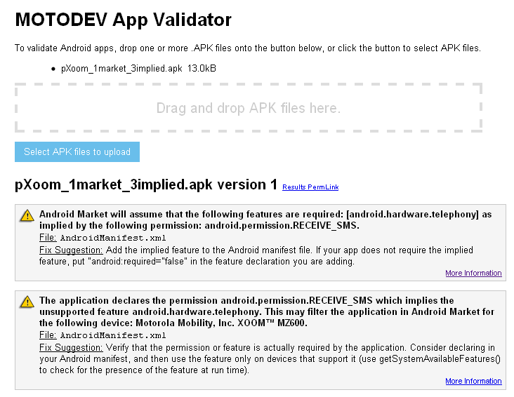

NOTE: This blog post was originally hosted on Motorola's MOTODEV web site. That site was decommissioned in 2012. I've made every attempt to preserve blog posts and accompanying forum posts with their original content. Many web links are no longer valid, so they have been removed and replaced with emphasized text.
by Eric Cloninger (EricC)
Hello everyone!
I'm excited. I mean I'm Excited!
It's springtime in North America and it's beginning to show. I've got robins and wrens in the birdbath outside my office. I've even got Cardinals, and Bluejays, and Orioles. (Oh My!) I have them on my Motorola XOOM as well. With the Major League Baseball™ app. And that makes me really, really happy.
One of the drawbacks of traveling so much is that I'm never completely certain what time zone I'm in. When I visit the Mother Ship in California, I always miss the early east coast games. And when I'm visiting the MOTODEV Studio team in Brazil, I don't get to follow my team at all (go Rockies!). It's rough being a baseball fan in a fútbol (or F1 racing) country. Which is why my XOOM and the MLB app make a perfect pair.
I'm convinced that Android tablets will conquer the world. I've been carrying a XOOM for a couple months and we're inseparable. I wake to it's soothing glow in the morning and catch the morning news with a cup of coffee. During the day, it chimes at me when tasks are due in Remember the Milk. It's by my side in the evening when we're watching TV. For bedtime reading, I'm currently devouring Stephen King's Dark Tower series as e-books. The Honeycomb e-book app puts my dedicated e-book reader to shame. I'm not quite ready to give up my laptop, but I see the day where I will be using nothing but a mobile phone and a tablet when I'm traveling. The rest of the world will follow our lead.
As a developer, you want your app to be available for these devices. If you don't have access to a tablet, how will you know if it works or not? By now, you've certainly downloaded the Honeycomb SDK and may have used the Android emulator. That will tell you that the code executes, but will it be visible in the market? You could register for one of our upcoming MOTODEV App Summits and try it out, firsthand. That's definitely a good idea, but that doesn't work for everyone.
Well, you've stuck with me this far, so I'll let the cat out of the bag. Today (Friday, April 8), we're releasing a new version of the MOTODEV App Validator . This is an updated version of the online tool we debuted last month on the MOTODEV web site. With this new version of the App Validator, we look at your manifest to make sure you aren't using any features or implied features (via permissions) that might prevent your app from being seen in the Android Market for XOOM users.
When you create an Android app, you have to specify certain information about the app in its manifest file. There are sections for features, which explain what hardware or platform features you are using. Some of these features you specify directly, but others are implied by the permissions you request. If you explicitly or implicitly request a feature that doesn't exist for a tablet (such as SMS), then your app is filtered for those devices that don't support it (such as SMS on the XOOM). There are other features that cause market filtering and this test is available for all our devices, not just the XOOM.
If you want a quick way to tell if your app might be filtered, give our latest version of the online app validator a try. Just drag and drop your APK file onto the web browser and you'll have the results in a few seconds. Here's an example of what you might see if you are using SMS in your app...

We're rolling this same functionality into the standalone (desktop) version of App Validator that ships with MOTODEV Studio. I expect that version to be available soon, so check the MOTODEV Studio blog often or subscribe to the MOTODEV Studio RSS feed for immediate notification of news about our award-winning tools.
Thank you for using MOTODEV Studio and the MOTODEV App Validator.
Eric